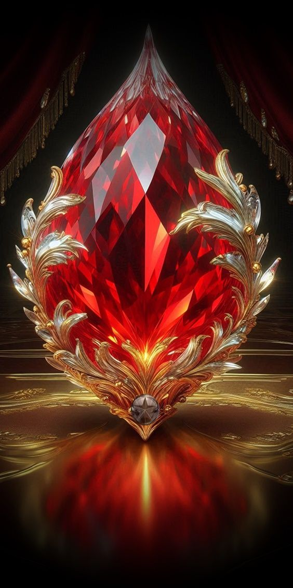
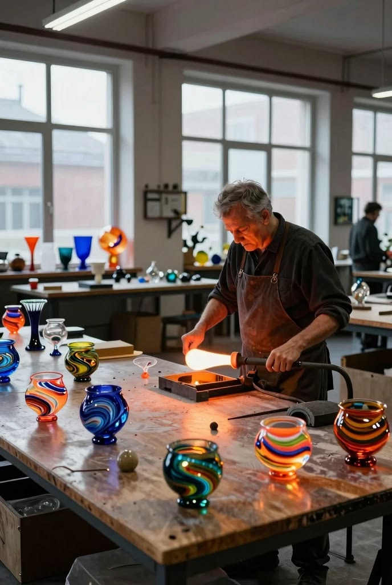
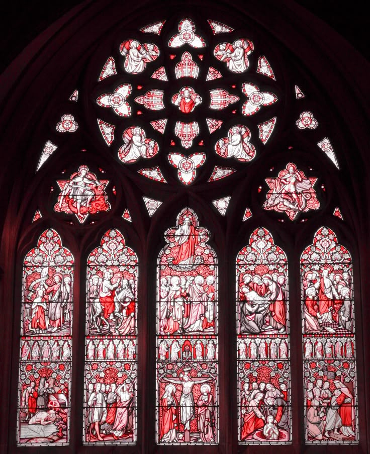
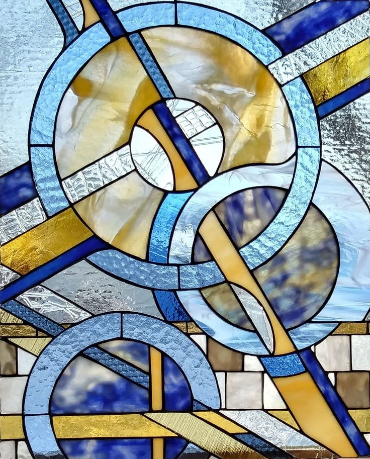
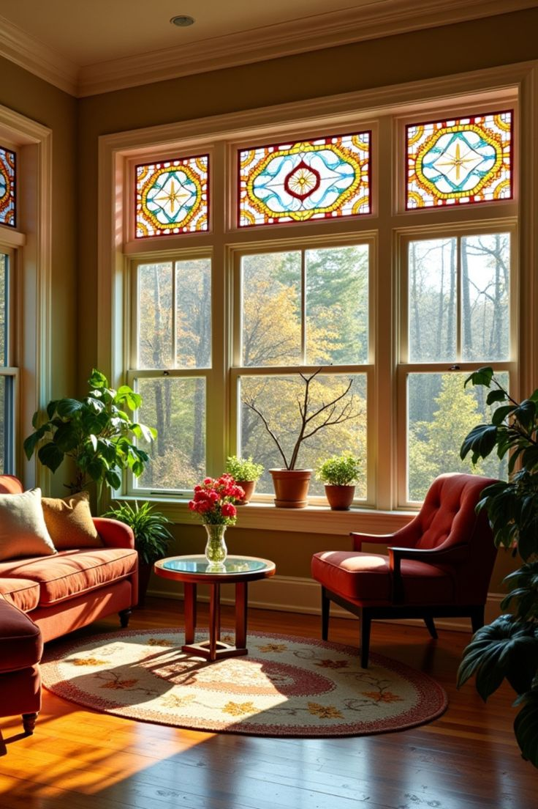
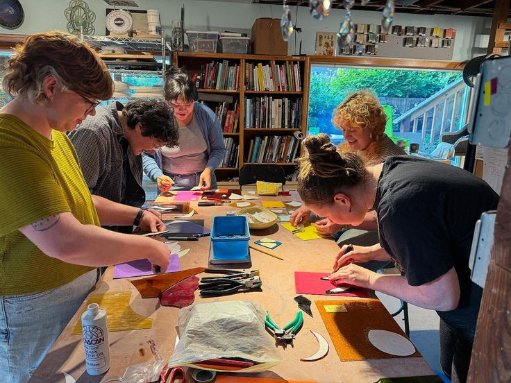
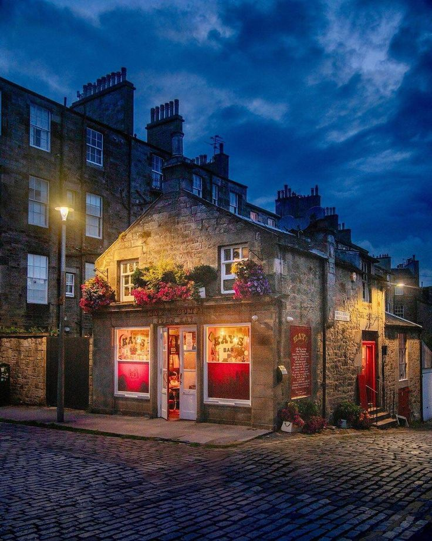

Mouth-Blown Antique Glass
Lamberts & Saint-Just FoundriesHand-blown cylinder glass with delicate air seeds and rich natural refraction.
Mouth-blown antique glass, hand-milled lead cames, and kiln-fired enamels crafted into timeless architectural light.

Authentic raw materials refined over centuries of European guild tradition.
Hand-blown cylinder glass with delicate air seeds and rich natural refraction.
Drawn through custom dies to precise architectural profiles with 100+ year durability.
Burnished copper foil enabling intricate curves and delicate botanical tracery.
Ground metallic oxides hand-painted and vitrified at 650°C for permanent fusion.

Founded in 1987 near the Royal Mile as a dedicated conservation atelier for Scotland’s ecclesiastical heritage.
Today, our master glaziers harmonize medieval craftsmanship with bespoke architectural commissions for residences and public spaces.
“Stained glass is not an ornament hung upon a wall; it is architecture transformed into living light. As the sun moves, the room breathes.”
— Colin Fraser, Master Craftsman
Explore representative architectural works crafted for historic monuments, residential transoms, and private collections.

Restoration of 18 historic lancet lights using hand-matched antique French glass and painted grisaille.

Abstract composition pairing mouth-blown German glass with bevelled crystal prisms for dynamic natural caustics.

Victorian fanlight suite celebrating Scottish flora with hand-rolled glass and aged patinated came.

Learn authentic stained glass techniques directly at professional studio benches with master glaziers.

Examine glass samples under natural daylight, review full-scale cartoons, and discuss project timelines.